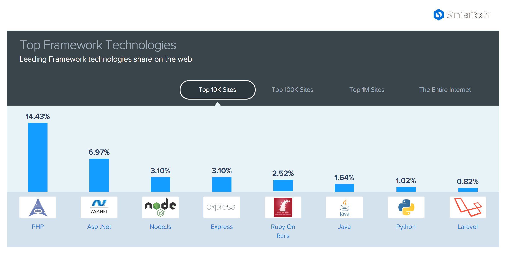
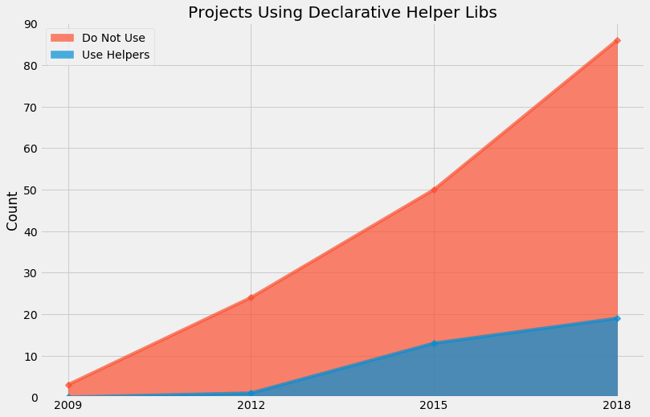

100 top projects
Does JavaScript Adopt Functional Programming?
@luftyoav
The Beginning
The Conflict
Resolution
?
Short Version
Analyzing the Code
=
JavaScript Becomes Functional Declarative
The End!
Introduction
Yoav Luft
Web Dev - Games - Embedded
Table of Contents
Why should we care about JavaScript?
What "adopting functional programming" even means?
The Quest for Data
What’s next?
The Past and Present of Javascript
Imperative
Functions are 1st class citizens
Universally typed
Prototypical Inheritance
var object =
{ name: "Object1",
action: function() { },
data: [1, 2, 3]
}
JSON.stringify(object) ==
"{\"name\":\"Object1\",\"data\":[1,2,3]}"function Dog() {
this.voice = "Woof!"
this.makeSound = function() {
return this.voice
}
}
var dog = new Dog
var cat = {voice: "Prrrr",
makeSound: dog.makeSound}
cat.makeSound() == "Prrrr"
But why should we care?
JavaScript for Functional Programming
Javascript has:
anonymous functions
closures
uses continuation passing
structured modeling of async (almost monads!)

Rapidly Evolving Standard
anonymous functions shorthand (2015)
destructuring assignments (2015)
generator functions (2015)
tail-call optimization (pending)
pipe-operator (pending)
partial application syntax (pending)
pattern matching (pending)
Part II: What does
"Adopting functional programming"
even mean?
Adopting functional programming
Adopting
Functional programming was not popular, or formally accepted in Javascript
It is now becoming more popular, or being formally accepted
Functional Programming
How much is JavaScript functional programming
Computation as the evaluation of mathematical functions
Avoids changing-state and mutable-data
Declarative programming paradigm
Criteria
Criterion 1:
Computation of Mathematical Functions
Mathematical
function append(array, x) {
return array.concat(x)
}
var a1 = [1, 2]
var a2 = append(a1, 3)
// a1 == [1, 2]; a2 == [1, 2, 3]Non-mathematical
var array = [1, 2]
function append(x) {
array.push(x)
}
append(3) // undefined -> no return
// array == [1, 2, 3]Criterion 2:
Avoid changing state and mutable-data
Immutability
Criterion 3:
Declarative Programming Paradigm
a style of building the structure and elements of computer programs—that expresses the logic of a computation without describing its control flow.
— Wikipedia
[…] without describing its control flow.
While loops
while (condition) {
doAction()
}
do {
action()
} while (condition)For loops
for (var i = 0; i < size; i++) {
use(i)
}
for (var property in object) {
use(property)
}
for (var index of array) {
use(index)
}Branching
If-else
if (condition) {
doSomething()
} else {
doSomethingElse()
}
var a = condition ? val1 : val2Switch statement
switch (response) {
case "yes":
return true
case "no":
return false
default:
return undefined
}But Which?
Iteration functions
map, filter, forEach and reduce
| Imperative | Declarative |
|---|---|
| |
| |
Helper Libraries for Functional Programming


Part III: The Quest for Data
Methods
Projects which are:
Open source
Have a lot of contributors
Have been around for a while


Data Collection Process
Data Collection Process 1
Data Collection Process 2
Data Collection Process 3
Terminology
Project = A repository on Github
Sample = Data on patterns from a project’s snapshot
Sample Year = A sample from the specified year
Patterns: Imperative
for loop, for..in loops, for..of loops
for (var i = 0; i < size; i++) {...}
for (var i in object) {...}
for (var i of array) {...}while and do-while loops
while (cond) {...}Patterns: Declarative
forEach calls
map calls
filter calls
reduce calls
The Sample
Projects
Projects by Age
Size of Projects
Results
Constructs in Samples
Constructs per LoC
Constructs in Percentage
Conclusions
More Declarative Iteration!
but not that much…
Individual Projects
Individual Projects

What Kind of Projects Are Declarative?
Age as Estimator
Number of Forks
Stargazers vs. Index
Project Contributors
Conclusions
Supporting Libraries

What’s Next
What are your options?
Elm

ClojureScript
PureScript

Reason
WebAssembly
As for me…
Look at a larger sample
Examine more structures, e.g. assignments
Look at the use of higher-order functions
Examine results into more detail.
Examine changes of code over time
Look for projects migrating from Javascript to functional languages
Shameless Plug
@luftyoav